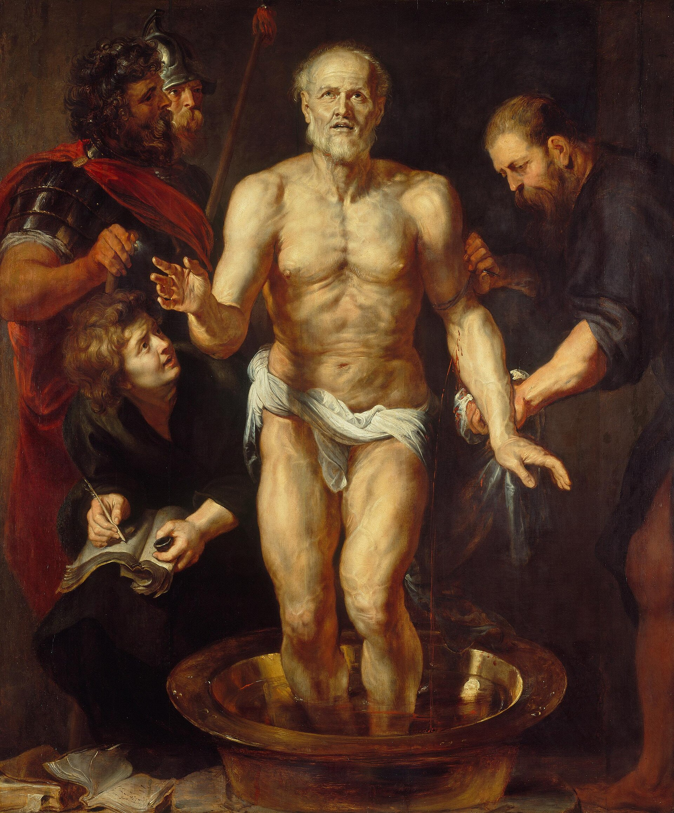

Philippians 4 — The Mister Translation

⚠ Not an illustration of this chapter — a picture of the philosophy it borrows its central word from. Autarkeia, the self-sufficiency Paul says at verse 11 that he has learned, is the Stoic ideal, and this is a Stoic practising it to the end: Seneca, ordered to die by Nero in AD 65, standing in a basin while a physician opens his veins.
Now look at the boy bottom left. He has a pen, an inkwell and an open notebook, and he is taking dictation. Tacitus records that Seneca called for secretaries and went on dictating as he bled. And Paul’s letters were dictated too — Romans names the scribe who held the pen (Romans 16:22). Two men in the same empire in the same decade, both composing by dictation, both under a Roman death sentence: one in a bath in Rome writing about how to die well, one in custody writing that he has learned to be content on little. Paul greets “those of Caesar’s household” twelve verses later; Seneca had been Nero’s tutor and sat in that household.
⚠ They are not known to have met, and the surviving correspondence between Paul and Seneca is a fourth-century forgery. The armoured officer and the spearman are the execution detail, waiting.
{kind=link}
Translator’s Notes
1–3 — Two women, a possible name, and a quarrel put in writing
Euodia and Syntyche are both women, and both are named. That is the whole of what we know about them, and it is worth pausing on: a congregational dispute serious enough that Paul addresses it from prison, with both parties named in a letter he expected to be read aloud to the congregation. He does not say who is right. He asks a third party to help them.
⚠ That third party may or may not have a name. Gnēsie syzyge is “genuine yokefellow” — someone under the same yoke — but Syzygos is also attested as a personal name, which would make the line “yes, and I ask you too, genuine Syzygus”, a pun on the man’s own name. Nothing decides it. The shelf is unanimous in taking it as a description: KJV and ASV “true yokefellow,” NWT “genuine yokefellow,” while TNM drops the yoke image entirely («un colaborador de verdad») and RV reads «hermano compañero». This translation keeps the yoke and flags the alternative here.
Synēthlēsan (v3) is an athletic word — to contend alongside, as in the games. Paul uses it of these two women. And the book of life is a civic image before it is an apocalyptic one: cities kept registers of citizens, and Philippi was a Roman colony whose people were very conscious of being on a roll.
4–7 — A word from the barracks
Epieikes (v5) has no clean English equivalent: the quality of not insisting on the last inch of what you are owed. “Moderation” (KJV) and “gentleness” are both approximations; this translation says reasonableness, which is closer and still not it.
And verse 7’s verb is phrourēsei — a military term: to garrison, to mount a guard over. It is what a sentry does. Every version reaches for “keep” or “guard”, which is right, but the register is worth hearing in a letter to a colony full of army veterans — Philippi was settled with discharged Roman soldiers, and Paul tells them that the peace of God will stand sentry duty over their thinking.
8–9 — ⚠ Paul reaches outside his own vocabulary
This is the observation to carry out of the chapter, and it is countable. Verse 8 is a list of six qualities, and three of the words in it are effectively foreign to the rest of the New Testament:
Prosphilēs (“lovely”) occurs once in the New Testament — here. Euphēmos (“well spoken of”, of good repute) occurs once — here. And aretē, virtue — the master-word of Greek ethics, the whole subject of Aristotle and the Stoics — occurs four times in the New Testament, three of them in Peter, and this is Paul’s only use of it in everything he wrote. Semnos (“dignified”) is nearly as rare outside the Pastorals.
In other words: writing to a Roman colony, Paul assembles a list of virtues in the vocabulary of Greek civic moral philosophy rather than his own. He does not usually talk like this. The shelf mostly preserves it — KJV keeps “if there be any virtue” and RV «si hay virtud alguna» — though NWT renders the list in ordinary language (“of serious concern… chaste”) and loses the philosophical flavour.
Verse 8’s final verb is logizesthe — the accounting word again (see logizomai), which this library met at 1 Corinthians 13:5. Not “think about” so much as reckon, enter in the ledger. And the chapter is about to turn into an actual set of accounts.
10 — A gardening word
anethalete is a plant word: to bloom again, to put out new shoots after a dormant season. Paul says the Philippians’ concern for him has flowered again, and then immediately protects them from the implication — you were thinking of it all along, you simply had no opportunity. It is a characteristically careful piece of thanking.
11–13 — ⚠ Two borrowed words, and the missing word in the most-quoted verse
First: autarkēs (v11). This is the central technical term of Stoicism — self-sufficiency, the condition of needing nothing outside yourself, which for a Stoic is the whole of virtue and the whole of freedom. It appears twice in the New Testament, both in Paul, and the adjective only here. He says he has learned it — and then in the very next breath locates his sufficiency in someone else. He takes the word and breaks the thing it was built to mean.
Only one version on the shelf lets you see it. NWT renders it “to be self-sufficient”; KJV and ASV say “to be content,” RV «contentarme con lo que tengo», and TNM «estar contento». “Content” is a fine English word and it hides the borrowing completely.
Second: memyēmai (v12). “I have been initiated” — from myeo, the verb used of initiation into the mystery cults, and the root behind mystery itself. It occurs once in the entire New Testament, here. Paul describes learning to live with plenty and with hunger in the language of a man being initiated into a secret rite. ASV catches it best with “have I learned the secret,” and NWT and TNM follow («el secreto»); KJV flattens it to “I am instructed” and RV to «estoy enseñado».
⚠ And then verse 13, which is missing a word. The apparatus is blunt: me in Westcott-Hort, Tregelles and NA28; the Byzantine text adds Christō. So the earliest text reads “for all things I have strength in the one who empowers me” — and the famous “through Christ who strengthens me” is the longer reading.
The shelf divides on exactly the line it divided on at Romans 8:1, and for the same reason. KJV “through Christ which strengtheneth me” and RV «en Cristo que me fortalece» both follow the Received Text; ASV “in him that strengtheneth me,” NWT “by virtue of him who imparts power to me,” and TNM «gracias a aquel que me da poder» do not.
⚠ No vote is taken. Note only that the sense is not in dispute — the antecedent is obviously Christ either way — and that what the verse actually says is smaller and stranger than the version on the merchandise. Panta ischyō is “I am strong for all things”, a statement about capacity to endure in the middle of a paragraph about being hungry, not a promise of achievement.
14–20 — The chapter becomes a set of books
The accounting language of verse 8 turns literal here, and it is sustained: logon doseos kai lēmpseōs (v15) is a commercial phrase — an account of giving and receiving, debits and credits. Verse 17 has fruit increasing eis logon hymōn, to your account. Verse 18’s apechō is the word used on receipts: paid in full. Paul is writing a thank-you letter in the form of a statement of account, and then — in the same breath — calls the money a fragrant aroma and an acceptable sacrifice, which is temple language. The gift is simultaneously a transaction and an offering.
⚠ Note what verse 19 does and does not promise, since it is quoted nearly as often as verse 13: it is addressed to a congregation that had just given money away, and the verb is plērōsei, will fill — the same root as “I have been filled” in the previous verse. It is a reply to their generosity, not a general principle detached from it.
21–23 — Caesar’s household
“Those of Caesar’s household” (v22) does not mean the imperial family. The familia Caesaris was the vast body of slaves and freedmen who ran the imperial administration — clerks, stewards, couriers — and it is a striking group to be sending greetings from a prison to a Roman colony. The gospel is moving through the machinery of the empire, and Paul mentions it in a postscript.
The Philippians were, incidentally, exceptionally likely to notice: Philippi was a colonia settled with veterans, its people held Roman citizenship, and Acts 16 has Paul using that citizenship there to considerable effect.
Patterns worth carrying forward.
⚠ The one thing to carry out of this chapter. Writing to a Roman colony, Paul reaches outside his own vocabulary, and it can be counted. Prosphilēs (“lovely”) and euphēmos (“well spoken of”) each occur once in the whole New Testament, both in verse 8. Aretē — virtue, the master-word of Greek ethics — occurs four times in the New Testament, three of them in Peter, and verse 8 is Paul’s only use of it in everything he wrote. Autarkēs (v11) is the central technical term of Stoicism. And memyēmai (v12), “I have been initiated,” is the verb of the mystery cults and a New Testament hapax. Four borrowed words in five verses, from civic ethics, Stoic philosophy and the mysteries.
And he breaks the biggest one. Autarkeia is the Stoic ideal of needing nothing outside yourself — and Paul says he has learned it and then, in the next breath, locates his sufficiency in someone else. Only the NWT lets an English reader see this, by rendering the word “self-sufficient”; KJV, ASV, RV and TNM all say “content,” which is good English and hides the borrowing entirely.
⚠ The most-quoted verse in the letter is missing a word. At verse 13 the apparatus reads me in Westcott-Hort, Tregelles and NA28; the Byzantine text adds Christō. So the earliest text is “for all things I have strength in the one who empowers me.” The shelf divides on precisely the line it divided on at Romans 8:1 — KJV and RV carry “Christ,” ASV, NWT and TNM do not. No vote is taken, and the sense is not in dispute; what changes is only that the verse says something smaller and stranger than the version on the merchandise. Panta ischyō is “I am strong for all things” — a claim about capacity to endure, sitting in a paragraph about being hungry.
The chapter turns into a set of books. Verse 8’s closing verb is logizomai, to reckon or enter in a ledger — and then the accounting becomes literal: an account of giving and receiving (v15), fruit increasing to your account (v17), and at v18 apechō, the word written on receipts: paid in full. In the same breath the money is called a fragrant aroma and an acceptable sacrifice. The gift is a transaction and an offering at once.
Renderings chosen. “Self-sufficient” at v11 and “I have been initiated” at v12, so the borrowings are visible. “Stand guard over” for phrourēsei at v7, which is a sentry’s word in a letter to a colony of army veterans. “Reasonableness” for epieikes at v5, which has no clean English equivalent. And yokefellow kept at v3.
⚠ Left open. Syzygos at verse 3 is “yokefellow,” but it is also attested as a personal name — which would make the phrase a pun on the man’s own name. The whole shelf reads it as a description; nothing decides it.
Worth knowing about the people. Euodia and Syntyche (v2) are both women, both named, and the dispute between them was serious enough for Paul to address it from prison in a letter meant to be read aloud. He does not say who is right. And “those of Caesar’s household” (v22) is not the imperial family but the familia Caesaris — the slaves and freedmen who ran the administration.
⚠ A note on order: Philippians stands on these pages at chapters 1 and 4 — a deliberate jump to the most-searched chapter in the letter. The sequential thread is unchanged: next in sequence is Philippians 2, which is where the navigation above points.